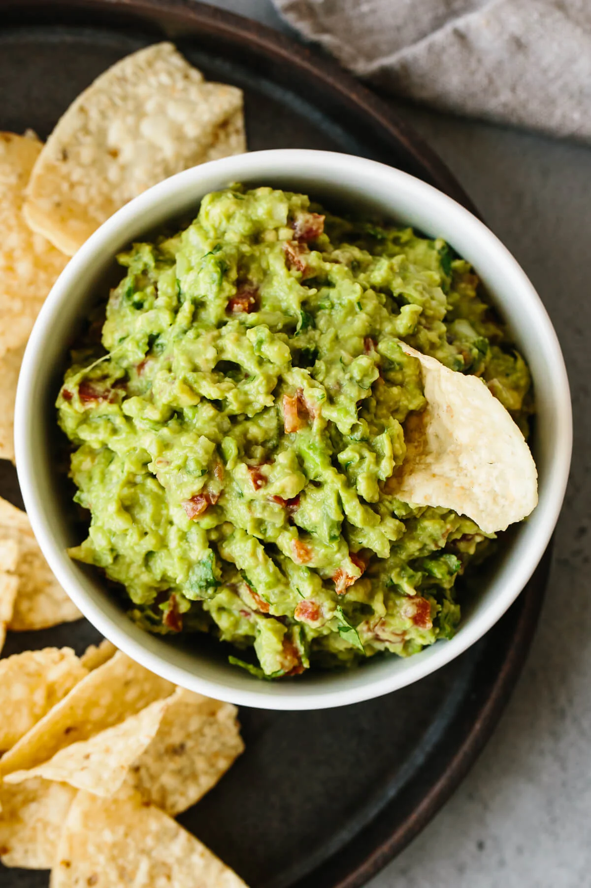

Guac Recipe

Description
This is the guacamole recipe as it’s simple to make and uses fresh, high-quality ingredients. Authentic guacamole doesn’t contain fillers and unnecessary ingredients. All you need is avocados, onion, tomatoes, cilantro, jalapeno pepper, lime juice, garlic, and salt. Easy and delicious!
Ingredients
- Cilantro
- Red Onion
- Avocado
- Lime
Steps
- Slice three ripe avocados in half, remove the pit and scoop them into a mixing bowl.
- Then use a fork to gently mash them to your desired level of chunky or smooth.
- Add the onions, tomatoes, cilantro, jalapeno pepper, garlic, lime juice and salt and stir everything together.